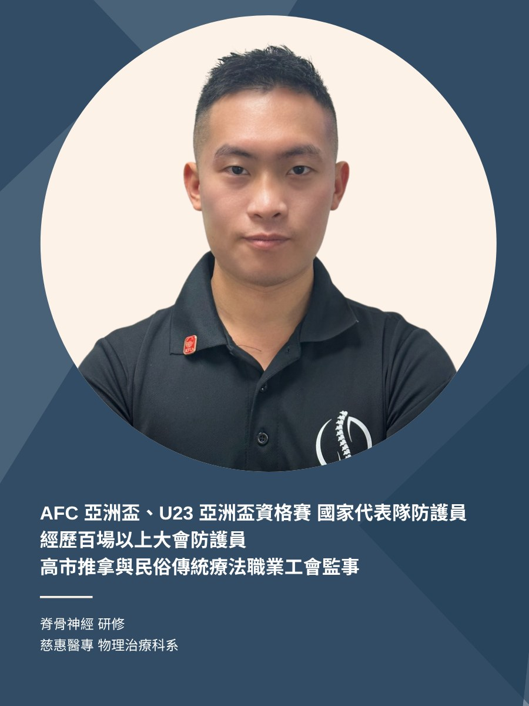
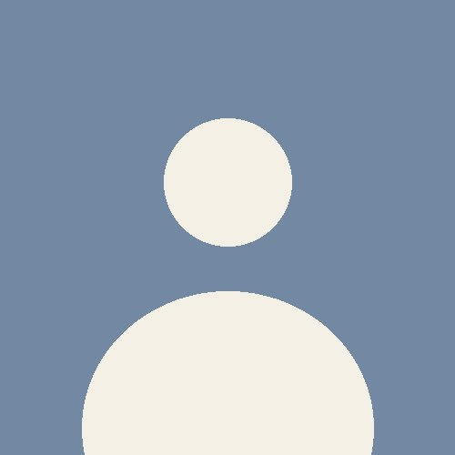
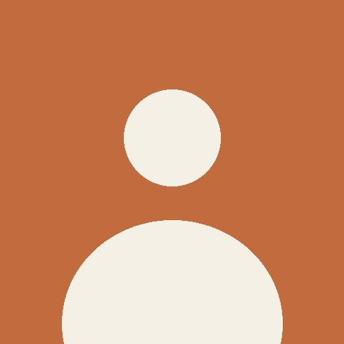

傳承 HERITAGE
從陳健嵩到陳青杉,兩代人的整復之路
青嵩工坊的名字,源自創辦人陳青杉先生的父親——陳健嵩先生。工作室成立於2022年,座落於高雄市新興區,致力於將這份技術與專業服務延續下去。
民國80年
陳健嵩先生投入中式整復推拿,服務無數需要舒緩調理的鄉親,累積深厚口碑與經驗。
2022年
陳青杉先生成立青嵩工坊,結合美式脊骨、運動按摩與國家隊防護經驗,承接這份手藝並發揚光大。
現在
青嵩工坊持續為高雄的運動愛好者,提供專業放鬆與提升運動表現的服務空間。
團隊介紹
整復師推薦



收費方案
結合中西手法的整復服務
依調理部位與方式分成三種方案,價格與內含項目一次看清楚。
附肢骨調理
適合肩、肘、腕、髖、膝、踝部調理
NT$600–180020–30分鐘起,以部位計價
- 物理評估
- 美式整復
- 肌筋膜鬆動術
- 動作控制
- 草藥膏或肌內效貼紮
第二部位(例如左肩+右肩)加購價 300元/部位
中軸骨調理
適合頸、胸、腰、臀部(骨盆)調理
NT$1200–180060分鐘起
- 物理評估
- 美式整復
- 肌筋膜鬆動術
- 紅外線拔罐器
- 深層按摩槍
- 動作控制
- 草藥膏或肌內效貼紮
搭配附肢骨調理(例如肩+頸、腰+髖)加購價 300元/20分
全身按摩
適合全身放鬆、舒緩疲勞
在這個匆忙的城市中,讓我們停下腳步,將疲憊轉化為輕盈,將壓力轉化為寧靜,讓我們徜徉在這份身心的溫柔之中。
NT$1800–220090分鐘
- 物理評估
- 深層按摩槍
- 肌筋膜鬆動術
- 紅外線拔罐器
- 草藥膏或肌內效貼紮
搭配美式整復加購價 400元
初次到訪
來之前,你可能想知道的事
不只是運動員——久坐、姿勢不良造成的肌肉緊繃,也是我們每天在處理的日常。
整天坐辦公室、肩頸僵硬也可以來嗎?
可以。除了提升運動表現,久坐、姿勢不良造成的肌肉緊繃,也是我們平常最常處理的狀況之一。
調理前需要空腹嗎?
不用刻意空腹,建議調理前1~2小時進食到6~7分飽即可,太餓或太飽都不建議。
調理後多久可以恢復正常活動?
建議先降到平常強度的3成左右(例如原本跑步100分鐘先降到30分鐘),觀察沒有不適後再逐步恢復。
多久該回來調理一次?
可依身體疲勞感(1~10分)抓頻率:1~3分約一個月一次,4~6分約2~3週一次,7~9分建議每週1~2次。
最新消息
青嵩動態
2024-02-04
2024年春假
預祝各位嵩友們 2024 龍年大吉。
2023-03-31
成吉思汗特約商家
凡出示員工/會員證明享有85折優惠,商品享有3期零利率。
2023-07-08
有重訓有運動,核心真的有用力嗎?
從核心肌群的收縮時機,談談大家常忽略的運動細節。